Capítulo 6 Visualização de dados
6.1 Introdução
A visualização de dados através de gráficos geralmente é a melhor forma de apresentar e discutir seus dados, fazendo uma uma síntese para melhor entendimento de padrões. Geralmente, os gráficos são necessários em quase todas as análises estatísticas, além de enriquecer a argumentação e discussão de hipóteses levatandas para publicações, trabalhos de consultoria, TCC, dissertação, tese, etc.
Dessa forma, dedicamos esse capítulo inteiramente a apresentar os principais conceitos, como a gramática de gráficos, um guia de bolso de gráficos apresentando os principais tipos de gráficos baseados nas variáveis representadas, e no último tópico focamos na finalização de gráficos para publicação.
Existem uma ampla gama de pacotes para fazer gráficos no R, sendo esse um ponto muito forte dessa linguagem: a ampla disponibilidade, e como esses pacotes se ajustam aos mais diferentes tidos de dados, além da praticidade, sendo que a maior parte dos pacotes possui uma sintaxe relativamente simples para a apresentação de gráficos excelentes e de ótima qualidade. Mais adiante no Capítulo ??, dicutimos como usar o R para a construção de mapas.
6.2 Principais pacotes
Fazemos aqui uma listagem dos principais pacotes para fazer gráficos:
graphics: é o pacote default do R para produzir gráfios simples, porém útil para visualizações rápidas de quase todos as classes de objetos. Possui funções como:
plot(),hist(),barplot(),boxplot(),abline(),points(),lines()epolygon().ggplot2: pacote integrado ao tidyverse (Capítulo ??), possui uma sintaxe própria baseada na grática de gráficos por camadas (layers), necessitando de funções específicas para objetos de classes diferentes, demandando geralmente mais tempo para realização. Possui funções como
ggplot(),aes(),geom_*(),facet_*(),stats_*(),coord_*()etheme_*(), que são conectadas pelo operador+.ggplot2 extentions: conjunto de pacotes que adicionam diversas expansões ao pacote ggplot2. Exemplos: gganimate, GGally, patchwork e esquisse.
visdat : Crie visualizações preliminares de dados exploratórios de um conjunto de dados inteiro para identificar problemas ou recursos inesperados usando ‘ggplot2.’ Possui diversas funções específicas:
vis_dat()- visão geral dos dados,vis_miss()- visão de dados faltantes (NA),vis_compare()- visualiza a diferença entre dados.ggpubr: pacote que fornece funções simplificadas para criar e personalizar gráficos para publicação baseados no “ggplot2.” Possui funções específicas:
gghistogram(),ggdensity(),ggboxplot(),ggviolin(),ggbarplot()eggscatter().plotly: pacote para criar gráficos interativos da web por meio da biblioteca gráfica de JavaScript de código aberto plotly.js. Também possui funções específicas:
plot_ly(),add_histogram(),add_bars(),add_boxplot(),add_markers(),add_paths(),add_lines()eadd_polygons().
6.3 Grámatica dos gráficos
ggplot(data = <DATA>) +
<GEOM_FUNCTION>(
mapping = aes(<MAPPINGS>),
stat = <STAT>,
position = <POSITION>
) +
<COORDINATE_FUNCTION> +
<FACET_FUNCTION> +
<SCALE_FUNCTION> +
<THEME_FUNCTION>6.3.1 ggplot2
# carregar o pacote
library(ggplot2)
library(tidyverse)6.4 Guia de bolso de gráficos no R
Existem vários tipos de gráficos para diferentes tipos de finalidades, até mesmo mais de um para representar o mesmo tipo de dado. Nesta seção, focaremos nos gráficos mais simples, para representar um ou duas variáveis.
Dependendo do tipo de variável (categórica ou contínua - veja os tipos no Capítulo 4) os gráficos mais indicados para representar os dados mudam. Resumindo de forma bastante simplificada, nossos gráficos são representações dos nossos dados tabulares. Dessa forma, os eixos representam as colunas e as feições (pontos, linhas, barras, caixas, etc.) representam as linhas.
Geralmente, nossos gráficos vão ser a representação de uma ou duas colunas, quando muito três, em gráficos de três dimensões. Para mais colunas, partimos para dados agregados que são vistos nos capítulo de análise multivariada.
6.4.1 Tipos de gráficos
Nesta seção, listamos os principais gráficos, e uma descrição de quantas colunas e o tipo de variável que eles representam.
- Histograma (histogram): distribuição de frequência de uma coluna para dados contínuos
- Gráfico de densidade (density plot): distribuição da densidade de uma coluna para dados contínuos
- Diagrama de pontos (dot plot): distribuição da quantidade de valores agrupados de uma coluna para dados contínuos
- Gráfico de setores (pie chart e donut chart): representação da quantidade de valores de uma coluna para dados categóricos, geralmente em proporção ou porcentagem
- Gráfico de barras (bar plot): representação da quantidade de valores de uma ou mais colunas para dados categóricos
- Gráfico de caixa (box plot e violin plot): distribuição de valores contínuos de uma coluna (Y) para dois ou mais fatores categóricos de outra coluna (X) no formato de caixas e também no formato de “violinos” (considerando a variação)
- Gráfico de dispersão (scatter plot): relação entre valores de duas colunas para dados contínuos (X e Y)
- Gráfico pareado (pairs plot): relação entre valores de duas colunas para dados contínuos (X e Y), para colunas par a par
6.4.2 palmerpenguins
Para exemplicar o funcionamento dessas funções, usaremos os dados de medidas de pinguins chamados palmerpenguins. Esses dados estão disponíveis no pacote palmerpenguins.
# instalar o pacote
install.packages("palmerpenguins")Esses dados foram coletados e disponibilizados pela Dra. Kristen Gorman e pela Palmer Station, Antarctica LTER, membro da Long Term Ecological Research Network.
O pacote palmerpenguins contém dois conjuntos de dados. Um é chamado de penguins e é uma versão simplificada dos dados brutos. O segundo conjunto de dados é penguins_raw e contém todas as variáveis e nomes originais baixados. Ambos os conjuntos de dados contêm dados para 344 pinguins, de três espécies diferentes, coletados em três ilhas no arquipélago de Palmer, na Antártica.
# carregar o pacote palmerpenguins
library(palmerpenguins)
# ajuda dos dados
?penguins
?penguins_raw6.4.3 Histograma (histogram)
Nesta seção iremos apresentar histogramas no R utilizando o ggplot2.
6.4.3.1 Histograma (simples)
Vamos utilizar o conjunto de dados palmerpenguins, para plotar a distribuição da variável flipper_length_mm em um gráfico de histograma. A função geom_hitogram() plota uma variável contínua no eixo x e a frequência de cada categoria no eixo y.
# histograma de uma variavel continua
ggplot(data = penguins, aes(x = flipper_length_mm)) +
geom_histogram()
6.4.3.2 Número de classes
Vamos utilizar o argumento bins para definir em quantas classes a variável x deve ser dividida.
# histograma com 10 classes
ggplot(data = penguins, aes(x = flipper_length_mm)) +
geom_histogram(bins = 10) +
ggtitle("10 classes")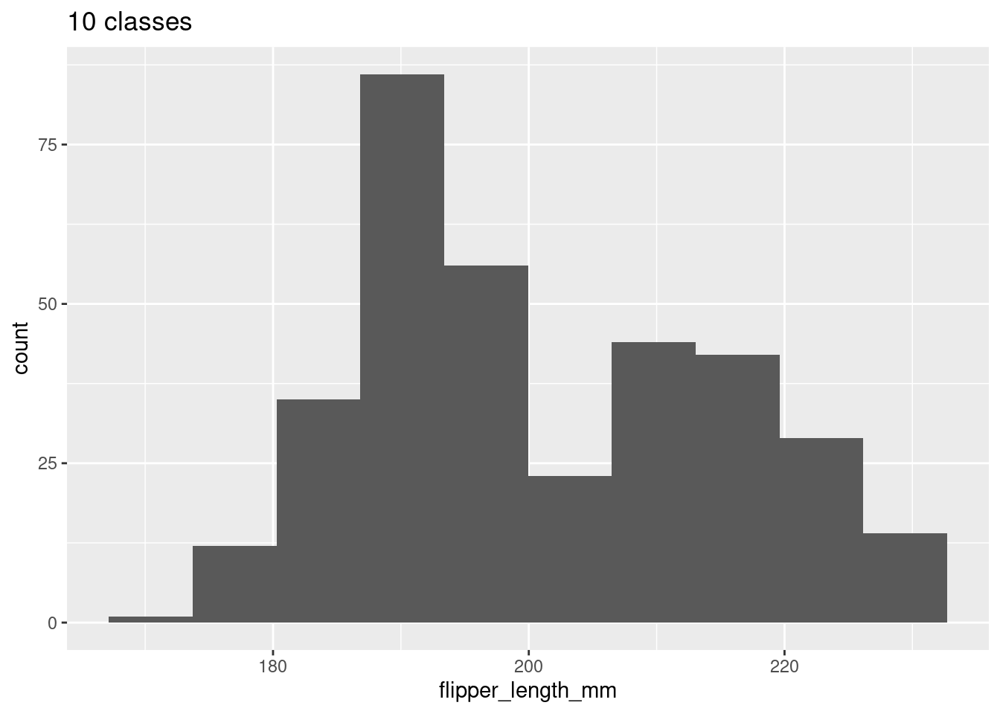
# histograma com 30 classes
ggplot(data = penguins, aes(x = flipper_length_mm)) +
geom_histogram(bins = 30) +
ggtitle("30 classes")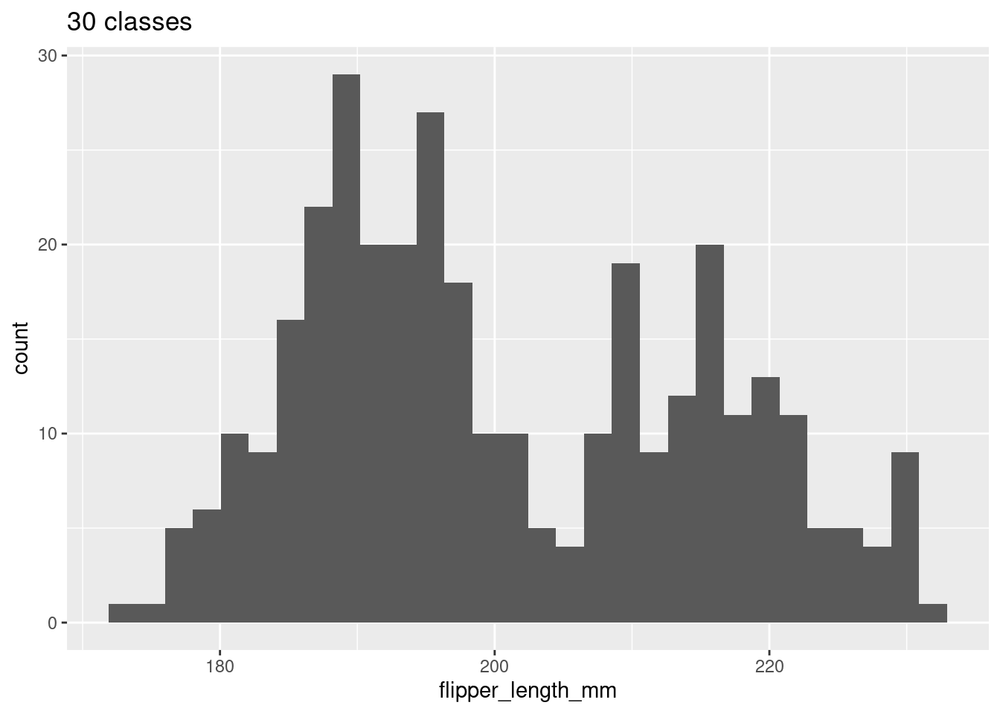
6.4.3.3 Múltiplas categorias
Se quisermos comparar a distribuição de uma variável contínua entre diferentes categorias, podemos utilizar o argumento fill para colorir o gráfico. No exemplo abaixo, utilizamos cores diferentes para ilustrar a distribuição da variável x entre espécies diferentes (fill = species).
# histograma com cores para diferentes categorias com sobreposicao
ggplot(data = penguins, aes(x = flipper_length_mm, fill = species)) +
geom_histogram(alpha = .5) +
ggtitle("Com sobreposiçao")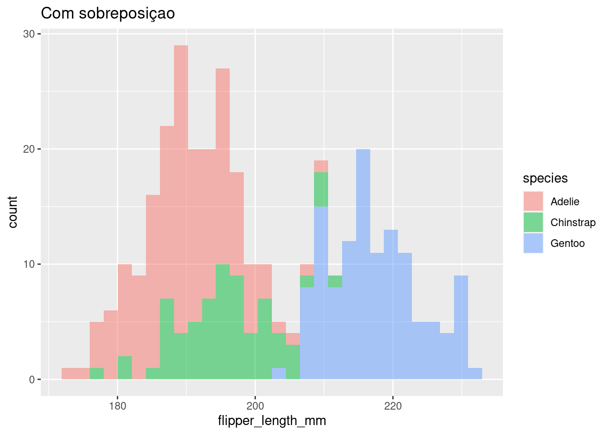
# Histograma com cores para diferentes categorias sem sobreposição
ggplot(data = penguins, aes(x = flipper_length_mm, fill = species)) +
geom_histogram(position = "dodge") +
ggtitle("Sem sobreposiçao")6.4.3.4 Histograma (bonito)
No final de cada seção, iremos demonstrar de um gráfico mais elegante. Veja a seção XX para mais detalhes de como manipular cada detalhe do gráfico com o pacote ggplot2.
# Histogram example: flipper length by species
ggplot(data = penguins, aes(x = flipper_length_mm, fill = species)) +
geom_histogram(alpha = .5, position = "identity") +
scale_fill_manual(values = c("darkorange", "darkorchid", "cyan4")) +
theme_classic(base_size = 18) +
labs(x = "Comprimento da nadadeira (mm)", y = "Frequência", fill = "Espécies")
6.4.4 Gráfico de densidade (density plot)
Nesta seção iremos aprender a criar um gráfico de densidade no R utilizando o ggplot2.
O gráfico de densidade é utilizado para visualizar a distribuição de uma variável contínua em intervalos. Esse gráfico é uma variação do Histograma (ver seção 6.4.3) que utiliza Kernel Smoother.
6.4.4.1 Gráfico de densidade (simples)
Vamos utilizar o conjunto de dados palmerpenguins, para plotar a distribuição da variável flipper_length_mm em um Gráfico de densidade. Utilizaremos a função geom_density() para plotar uma variável no eixo x.
# Gráfico de densidade de uma variavel continua
ggplot(data = penguins, aes(x = flipper_length_mm)) +
geom_density()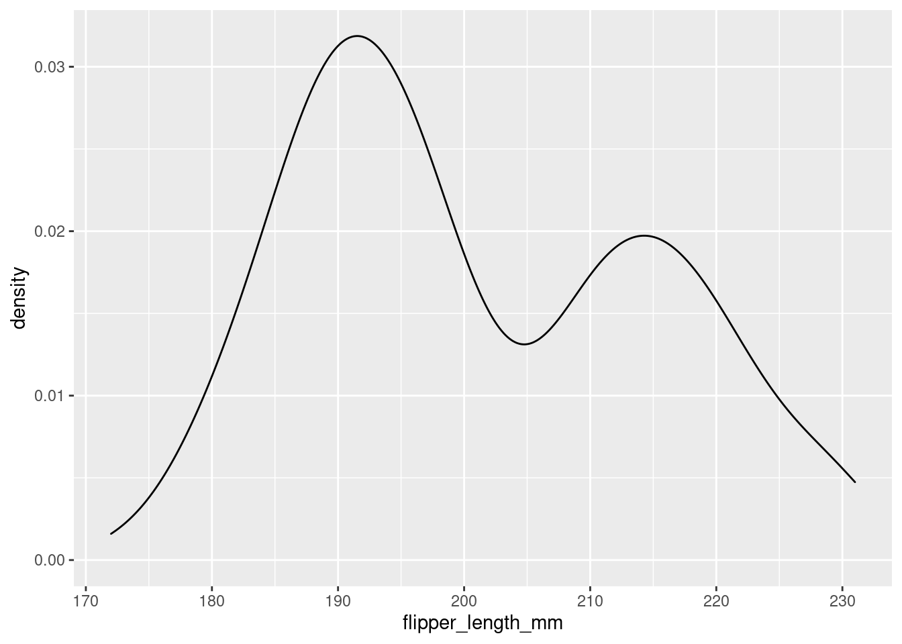
6.4.4.2 Gráfico de densidade (colorido)
Podemos utilizar o argumento fill para definir a cor de preenchimento do gráfico e o argumento alpha para definir a transparência do preenchimento. Utilizamos ainda o argumento color para definir a cor da linha.
# Gráfico de densidade de uma variavel continua
ggplot(data = penguins, aes(x = flipper_length_mm)) +
geom_density(fill = "tomato")
# Gráfico de densidade de uma variavel continua
ggplot(data = penguins, aes(x = flipper_length_mm)) +
geom_density(fill = "steelblue", color = "red", alpha = .5)
6.4.4.3 Múltiplas categorias
Em algumas situações, queremos comparar a distribuição de uma variável contínua entre diferentes categorias. Dessa forma, podemos utilizar o argumento fill para colorir o gráfico. No exemplo abaixo, utilizamos cores diferentes para ilustrar a distribuição da variável x entre espécies diferentes (fill = species).
# grafico de densidade com cores para diferentes categorias sem sobreposicao
ggplot(data = penguins, aes(x = flipper_length_mm, fill = species)) +
geom_density() +
ggtitle("Com sobreposiçao")
# Gráfico de densidade com cores para diferentes categorias com sobreposicao
ggplot(data = penguins, aes(x = flipper_length_mm, fill = species)) +
geom_density(alpha = .5) +
ggtitle("Com sobreposiçao")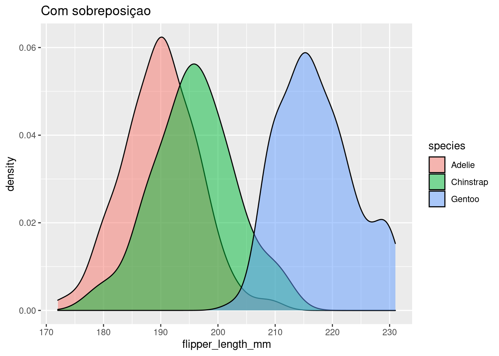
6.4.4.4 Gráfico de densidade (bonito)
ggplot(data = penguins, aes(x = flipper_length_mm, fill = species)) +
geom_density(alpha = .5) +
theme_classic(base_size = 18) +
scale_fill_manual(values = c("darkorange", "darkorchid", "cyan4")) +
scale_x_continuous(breaks = seq(from = 160, to = 240, by = 10), limits = c(160, 240)) +
scale_y_continuous(breaks = seq(from = 0, to = .07, by = .01)) +
theme_classic(base_size = 18) +
labs(x = "Comprimento da nadadeira (mm)", y = "Frequência", fill = "Espécies")
6.4.5 Diagrama de pontos (dot plot)
Nesta seção iremos aprender a criar um Dot plot no R utilizando o ggplot2.
6.4.5.1 Diagrama de pontos (simples)
ggplot(data = penguins, aes(x = flipper_length_mm)) +
geom_dotplot()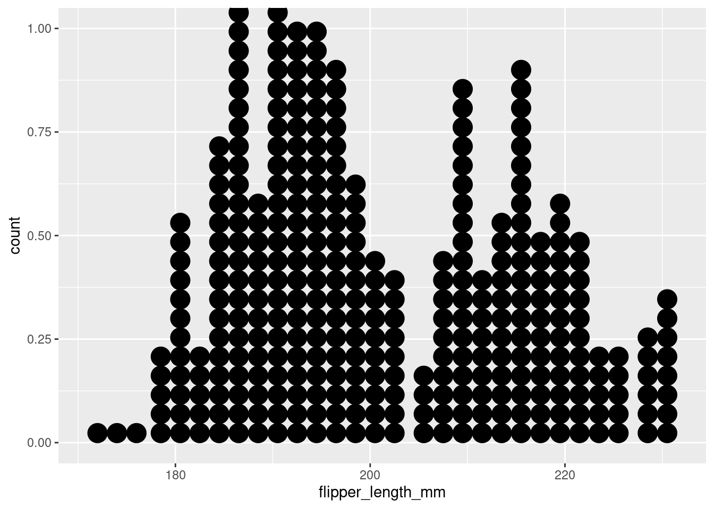
6.4.5.2 Ajustes básicos
Argumentos
- fill: para definir a cor de preenchimento dos pontos
- color: para definir a cor da linha de contorno dos pontos
- alpha: para definir a transparência dos pontos
6.4.5.3 Cor e preenchimento
ggplot(data = penguins, aes(x = flipper_length_mm)) +
geom_dotplot(fill = "tomato")
ggplot(data = penguins, aes(x = flipper_length_mm)) +
geom_dotplot(color = "red", fill = "gray")6.4.5.4 Dotplot (bonito)
ggplot(data = penguins, aes(x = flipper_length_mm, fill = species)) +
geom_dotplot(color = "white", alpha = .7) +
theme_classic(base_size = 18) +
scale_fill_manual(values = c("darkorange", "darkorchid", "cyan4")) +
scale_x_continuous(breaks = seq(from = 170, to = 240, by = 10), limits = c(170, 240)) +
scale_y_continuous(breaks = seq(from = 0, to = 1.2, by = .1), limits = c(0, 1.2)) +
labs(x = "Comprimento da nadadeira (mm)", y = "Frequência", fill = "Espécies")
6.4.6 Gráfico de barras (bar plot)
Nesta seção iremos aprender a criar Gráfico de Barra no R utilizando o ggplot2.
6.4.6.1 Gráfico de Barras (simples)
O gráfico de barras utiliza retângulos para representar uma variável contínua ou a contagem de uma variável categórica, sendo que o comprimeno dos retângulos é proporcional ao valor que ele está representando.
# resumindo o conjunto de dados
penguins_count <- penguins %>%
dplyr::count(species)
# grafico de barras
ggplot(data = penguins_count, aes(x = species, y = n)) +
geom_bar(stat = "identity")
6.4.6.2 Ajustes básicos
Argumentos
- width: para definir a largura das barras
- fill: para definir a cor de preenchimento das barras
- color: para definir a cor da linha de contorno das barras
6.4.6.2.1 Cor e preenchimento
# grafico de barras com preenchimento colorido
ggplot(data = penguins_count, aes(x = species, y = n)) +
geom_bar(stat = "identity", fill = "steelblue")
# grafico de barras com contorno colorido
ggplot(data = penguins_count, aes(x = species, y = n)) +
geom_bar(stat = "identity", color = "steelblue")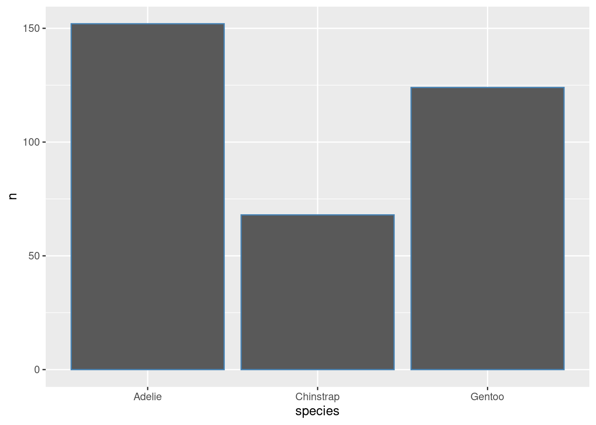
6.4.6.2.2 Largura das barras
# grafico de barras com largura modificada
ggplot(data = penguins_count, aes(x = species, y = n)) +
geom_bar(stat = "identity", width = .75) +
ggtitle("width = .75")
# grafico de barras com largura modificada
ggplot(data = penguins_count, aes(x = species, y = n)) +
geom_bar(stat = "identity", width = .25) +
ggtitle("width = .25") 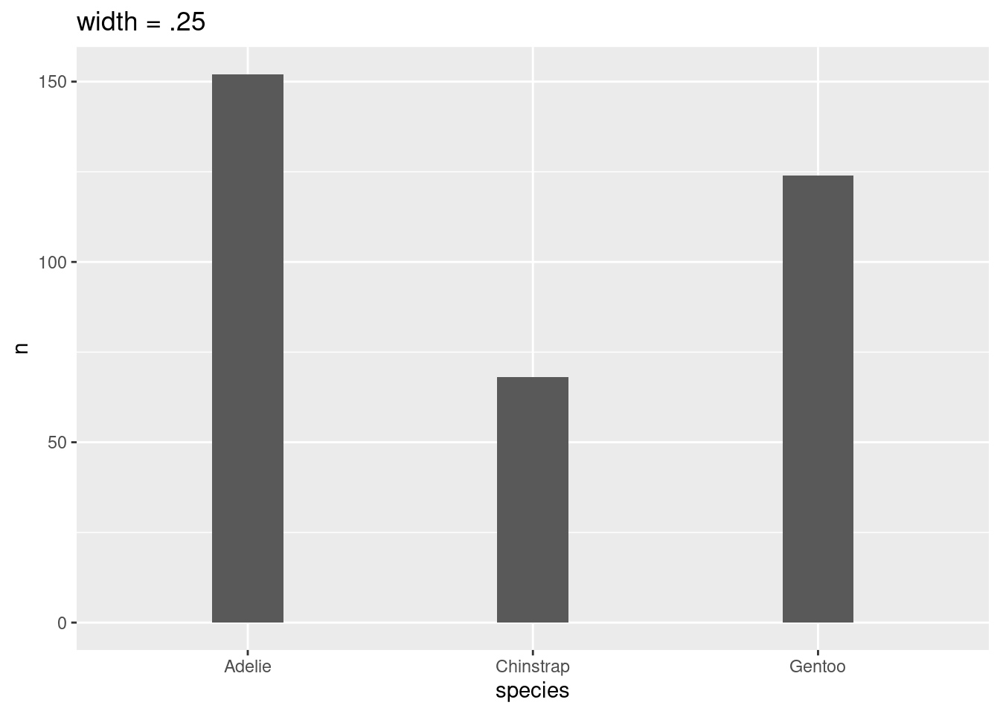
6.4.6.2.3 Orientação das barras
# grafico de barras vertical
ggplot(data = penguins_count, aes(x = species, y = n)) +
geom_bar(stat = "identity")
# grafico de barras horizontal
ggplot(data = penguins_count, aes(x = species, y = n)) +
geom_bar(stat = "identity") +
coord_flip()6.4.6.2.4 Colorindo por categoria
No exemplo abaixo, utilizamos cores diferentes para ilustrar os tratamentos diferentes através do argumento fill = species.
# grafico de barras com preenchimento colorido
ggplot(data = penguins_count, aes(x = species, y = n, fill = species)) +
geom_bar(stat = "identity")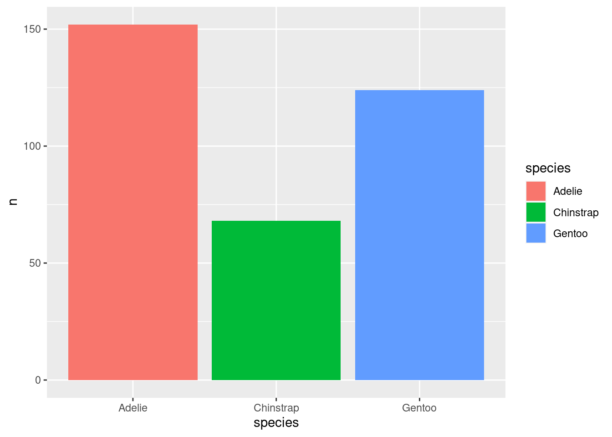
6.4.6.2.5 Gráfico de barras (bonito)
# grafico de barras
ggplot(data = penguins_count, aes(x = species, y = n, fill = species)) +
geom_bar(stat = "identity") +
geom_label(aes(label = n), fill = "white") +
theme_classic(base_size = 18) +
scale_fill_manual(values = c("darkorange", "purple", "cyan4")) +
labs(x = "Espécies", y = "Frequência", fill = "Espécies")6.4.7 Gráfico de setores (pie chart e donut chart)
Nesta seção iremos aprender a criar Gráfico de Setores no R utilizando o ggplot2.
6.4.7.1 Gráfico de setores (pie)
# resumindo o conjunto de dados
penguins_prop <- penguins %>%
dplyr::count(species) %>%
dplyr::mutate(prop = round(n/sum(n), 4)*100)
# grafico de setores - pie
ggplot(data = penguins_prop, aes(x = "", y = prop, fill = species)) +
geom_bar(stat = "identity", color = "white") +
coord_polar("y", start = 0) +
geom_text(aes(label = paste0(prop, "%")), color = "white",
position = position_stack(vjust = 0.5), size = 8) +
scale_fill_manual(values = c("darkorange", "purple", "cyan4")) +
theme_void() +
labs(fill = "Espécies")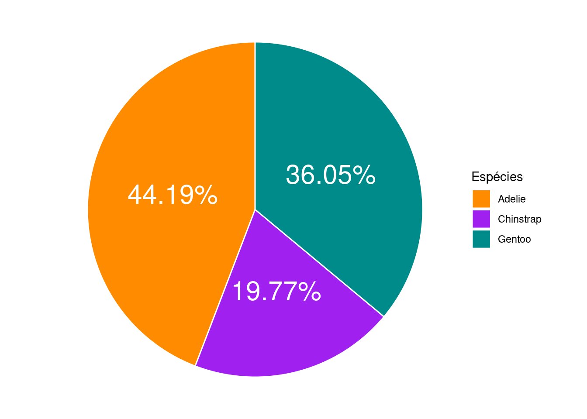
6.4.7.2 Gráfico de setores (donut)
# grafico de setores - donut
ggplot(data = penguins_prop, aes(x = 2, y = prop, fill = species)) +
geom_bar(stat = "identity") +
coord_polar(theta = "y", start = 0) +
geom_text(aes(label = paste0(prop, "%")), color = "white",
position = position_stack(vjust = .5), size = 5) +
scale_fill_manual(values = c("darkorange", "purple", "cyan4")) +
xlim(0, 2.5) +
theme_void() +
theme(legend.position = c(.5, .5),
legend.title = element_text(size = 20),
legend.text = element_text(size = 15)) +
labs(fill = "Espécies")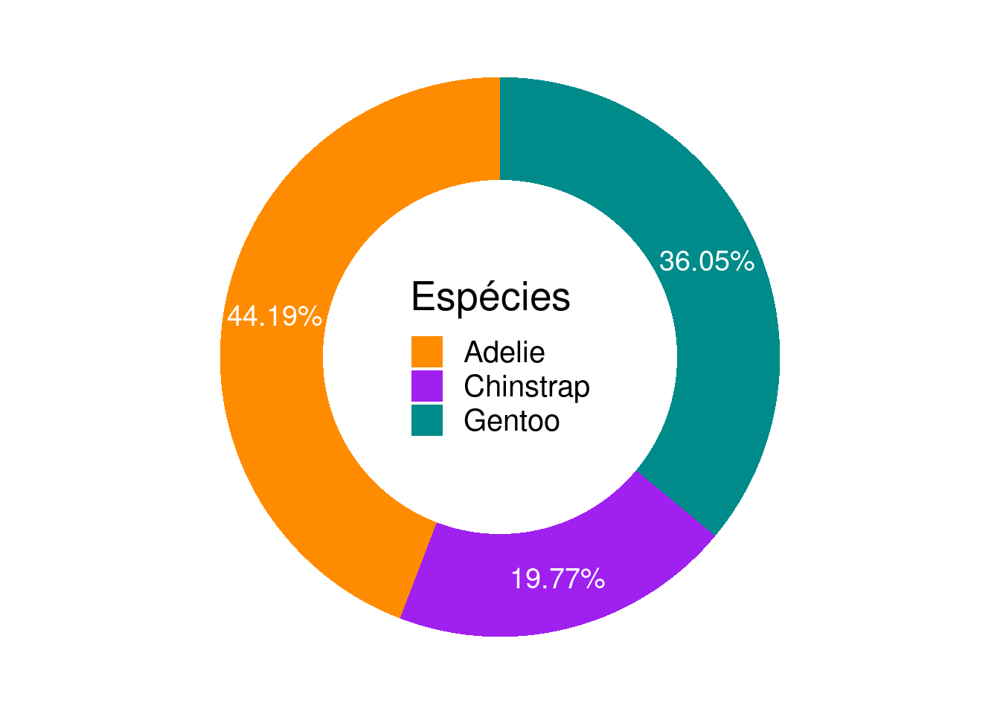
6.4.8 Gráfico de caixa (box plot)
Nesta seção iremos aprender a criar box plots no R utilizando o ggplot2.
6.4.8.1 Boxplot (simples)
Vamos plotar uma variável contínua (flipper_length_mm) no eixo y em função de uma variável categórica no eixo x (species). A definição de qual coluna do bando de dados é a x e qual é a y é feita dentro do comendo aes().
# box plot
ggplot(penguins, aes(y = flipper_length_mm, x = species)) +
geom_boxplot()6.4.8.2 Destque para os outliers
Utilizamos o argumento outlier.color para definir a cor dos outliers.
ggplot(penguins, aes(y = flipper_length_mm, x = species)) +
geom_boxplot(outlier.color = "red")Utilizamos o argumento notch = TRUE para produzir diagramas de caixa entalhados (notched). Estes diagramas são úteis para inferir de forma aproximada se exite diferença significativa entre as medias dos grupos.
ggplot(penguins, aes(y = flipper_length_mm, x = species)) +
geom_boxplot(notch = TRUE)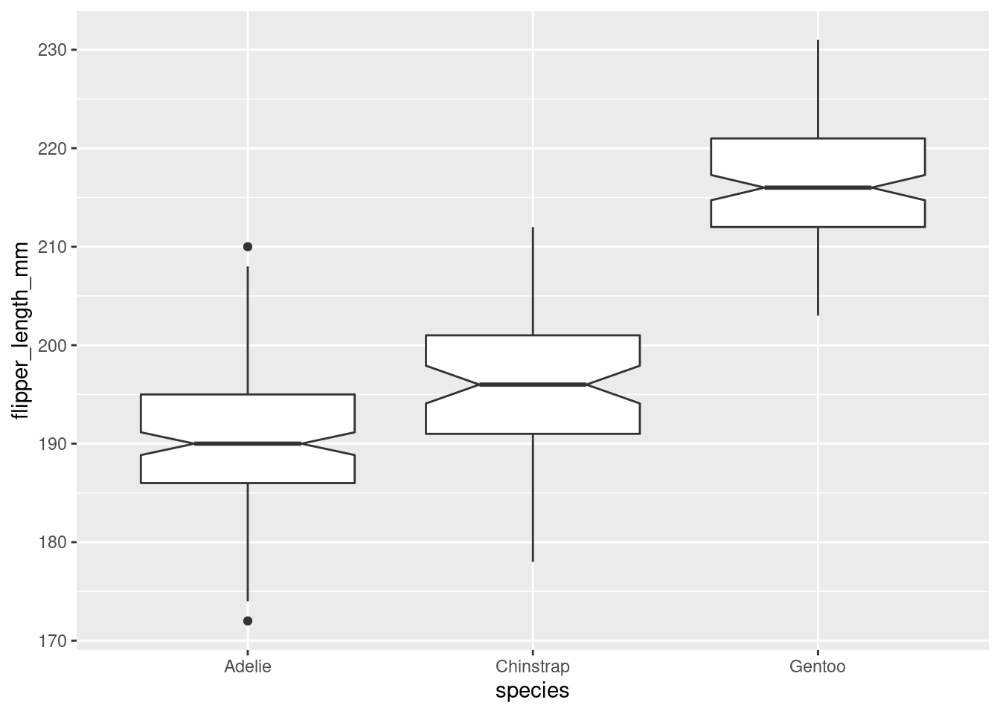
6.4.8.3 Colorindo por categoria
No exemplo abaixo, utilizamos cores diferentes para ilustrar espécies diferentes através do argumento fill = species.
# boxplot com cores para diferentes especies
ggplot(penguins, aes(y = flipper_length_mm, x = species, fill = species)) +
geom_boxplot()
6.4.8.4 Jitter
Podemos ainda acrescentar pontos para mostrar a distribuição dos dados.
# boxplot com jitters
ggplot(penguins, aes(y = flipper_length_mm, x = species, fill = species)) +
geom_boxplot() +
geom_jitter(size = .6)6.4.8.5 Gráfico de violino (violin plot)
Além das caixas, podemos utilizar o formato de “violino” para representar a variação ao longo dos dados.
# violino com jitters
ggplot(penguins, aes(y = flipper_length_mm, x = species, fill = species)) +
geom_violin() +
geom_jitter(size = .6)
6.4.8.6 Gráfico de caixas (bonito)
ggplot(data = penguins, aes(x = species, y = flipper_length_mm, color = species)) +
geom_boxplot(width = .3, show.legend = FALSE) +
geom_jitter(alpha = .5, show.legend = FALSE,
position = position_jitter(width = .2, seed = 0)) +
scale_color_manual(values = c("darkorange", "purple", "cyan4")) +
theme_classic(base_size = 18) +
labs(x = "Species", y = "Flipper length (mm)")6.4.8.7 Gráfico de violino (bonito)
ggplot(data = penguins, aes(x = species, y = flipper_length_mm, color = species)) +
geom_violin(width = .3, show.legend = FALSE) +
geom_jitter(alpha = .5, show.legend = FALSE,
position = position_jitter(width = .2, seed = 0)) +
scale_color_manual(values = c("darkorange", "purple", "cyan4")) +
theme_classic(base_size = 18) +
labs(x = "Species", y = "Flipper length (mm)")6.4.9 Gráfico de dispersão (scatter plot)
Nesta seção iremos aprender a criar Gráfico de dispersão no R utilizando o ggplot2.
6.4.9.1 Gráfico de dispersão (simples)
O gráfico de dispersão (“scatter plot”) é um tipo de gráfico que utiliza coordenadas cartesianas para representar a relação entre duas (ou mais) variáveis contínuas de um conjunto de dados.
# grafico de dispersão
ggplot(penguins, aes(x = bill_length_mm, y = bill_depth_mm)) +
geom_point()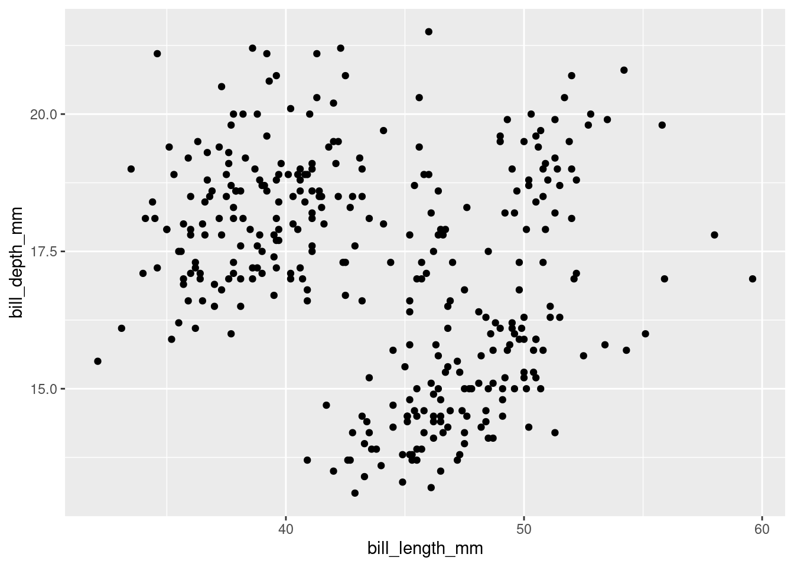
6.4.9.2 Ajustes básicos
Argumentos
- shape: para definir o símbolo dos pontos
- size: para definir o tamanho dos pontos
- fill: para definir a cor de preenchimento dos pontos
- color: para definir a cor da linha de contorno dos pontos
6.4.9.3 Tipos de símbolos
O tipo de símbolo que será plotado é definido pelo argumento shape. Existem diversas oções (6.1).

Figura 6.1: Tipos de símbolos disponíveis.
6.4.9.4 Símbolo
# grafico de dispersao com shape 1
ggplot(penguins, aes(x = bill_length_mm, y = bill_depth_mm)) +
geom_point(shape = 1, size = 3)
# grafico de dispersao com shape 17
ggplot(penguins, aes(x = bill_length_mm, y = bill_depth_mm)) +
geom_point(shape = 17, size = 3)6.4.9.5 Tamanho
# grafico de dispersao com size 1
ggplot(penguins, aes(x = bill_length_mm, y = bill_depth_mm)) +
geom_point(size = 1)# grafico de dispersao com size 5
ggplot(penguins, aes(x = bill_length_mm, y = bill_depth_mm)) +
geom_point(size = 5)6.4.9.6 Cor e preenchimento
# alterando cor e preenchimento
ggplot(penguins, aes(x = bill_length_mm, y = bill_depth_mm)) +
geom_point(color = "blue", fill = "red", shape = 21)# alterando cor e preenchimento
ggplot(penguins, aes(x = bill_length_mm, y = bill_depth_mm)) +
geom_point(color = "red", fill = "black", shape = 21)6.4.9.7 Gráfico de dispersão (bonito)
# grafico de dispersao
ggplot(data = penguins, aes(x = bill_length_mm, y = bill_depth_mm)) +
geom_point() +
geom_smooth(method = "lm", se = FALSE, color = "gray50") +
theme_classic(base_size = 18) +
labs(x = "Comprimento do bico (mm)", y = "Profundidade do bico (mm)")# grafico de dispersao
ggplot(data = penguins, aes(x = bill_length_mm, y = bill_depth_mm, color = species, shape = species)) +
geom_point(size = 3, alpha = 0.8) +
geom_smooth(method = "lm", se = FALSE) +
scale_color_manual(values = c("darkorange", "purple", "cyan4")) +
theme_classic(base_size = 18) +
labs(x = "Comprimento do bico (mm)", y = "Profundidade do bico (mm)",
color = "Espécies", shape = "Espécies")Além disso, podemos relacionar dados não tão usuais… Recomendamos muito a leitura desse artigo (Matejka & Fitzmaurice 2017) sobre as armadilhas que dados podem passar, quando não analisar sua relação visualmente através de um gráfico.
# package
library(datasauRus)
# data + plot
datasaurus_dozen %>%
dplyr::filter(dataset == "dino") %>%
ggplot() +
aes(x = x, y = y) +
geom_point(colour = "black", fill = "black",
size = 5, alpha = .75, pch = 21) +
theme_classic() +
theme(axis.title = element_text(size = 24),
axis.text.x = element_text(size = 20),
axis.text.y = element_text(size = 20))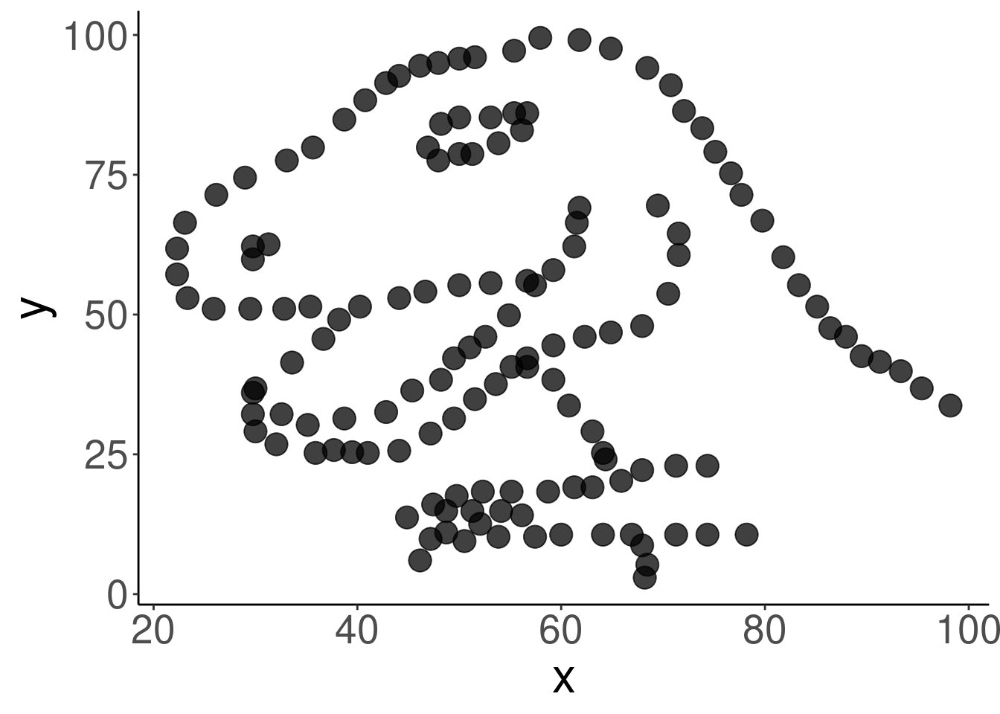
6.4.10 Gráfico pareado (pairs plot)
Muitas vezes precisamos plotar a relação de mais de uma variável, e muitas vezes essas variáveis são mais de um tipo. O gráfico mais indicado nesse casos é o gráfico pareado (Emerson et al. 2013 - https://doi.org/10.1080/10618600.2012.694762) que nos auxiliam à ter uma visão geral do conjunto de dados.
6.4.10.1 Gráfico pareado com variáveis contínuas
O gráfico pareado mais comum é o que relaciona apenas variáveis contínuas.
# grafico pareado com variáveis contínuas
penguins %>%
dplyr::select(body_mass_g, ends_with("_mm")) %>%
GGally::ggpairs(aes(color = penguins$species)) +
scale_colour_manual(values = c("darkorange", "purple", "cyan4")) +
scale_fill_manual(values = c("darkorange", "purple", "cyan4")) +
theme_bw()
6.4.10.2 Gráfico pareado com vários tipos de variáveis
Mas também podemos usar variáveis categóricas para ter uma visão geral dos dados.
penguins %>%
select(species, sex, body_mass_g, ends_with("_mm")) %>%
GGally::ggpairs(aes(color = species)) +
scale_colour_manual(values = c("darkorange", "purple", "cyan4")) +
scale_fill_manual(values = c("darkorange", "purple", "cyan4")) +
theme_bw()6.5 Finalização de gráficos para publicação
6.6 Exercíios
6.7 Para se aprofundar
6.7.1 Books
Chang W. 2018. R Graphics Cookbook. [http://www.cookbook-r.com/Graphs/]
Healy K. 2019. Data Visualization: a practical introduction. Princeton University Press. [https://socviz.co/´]
Kabacoff R. 2020. Data Visualization with R. [https://rkabacoff.github.io/datavis/]
Rahlf T. 2019. Data Visualisation with R: 111 Examples. 2ed. Springer. [http://www.datavisualisation-r.com/]
Sievert C. 2019. Interactive web-based data visualization with R, plotly, and shiny. Chapman & Hall/CRC. [https://plotly-r.com/]
Wickham H. 2016. ggplot2: elegant graphics for data analysis. Springer. [https://ggplot2-book.org/]
Wilke C O. 2019. Fundamentals of Data Visualization. O’Reilly Media. [https://clauswilke.com/dataviz/]
Wilkinson L, Wills D, Rope D, Norton A, Dubbs R. 2005. The Grammar of Graphics. Springer.